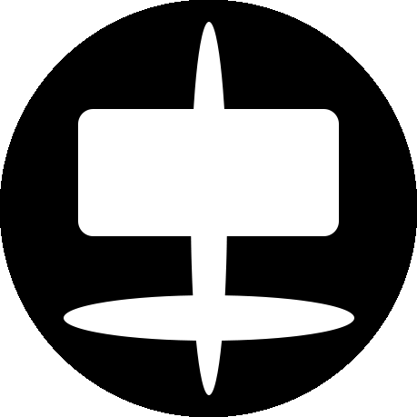

实现方法一
实现方法：
在html里的顺序：橙色盒子--我的照片div---个人logodiv。
1.橙色盒子里的内容盒子左右加margin，为左右两栏让出空间（注意：如果橙色盒子不加width：100%那么，当文字较少时，便无法撑起盒子的横排空间，会出现意外）
2. 左边的我的照片div用margin：-100%;其左边刚好与橙色盒子重合。
3.右边盒子margin:-盒子本身的宽度；
本方法的一个技巧在于对橙色盒子的内容再加一个盒子，以便让出空间。
我的照片
